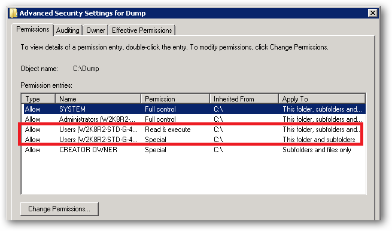
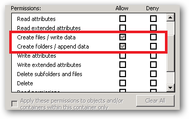
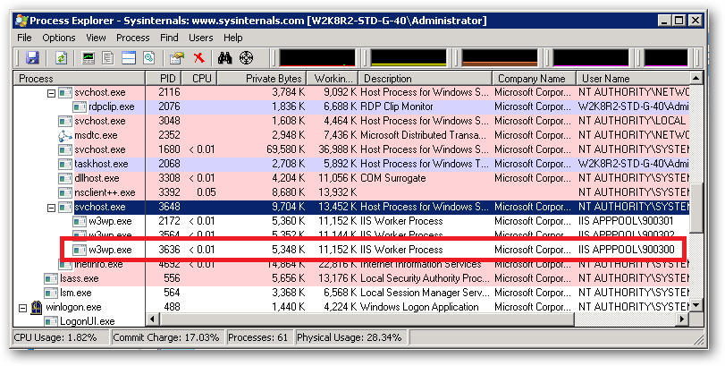
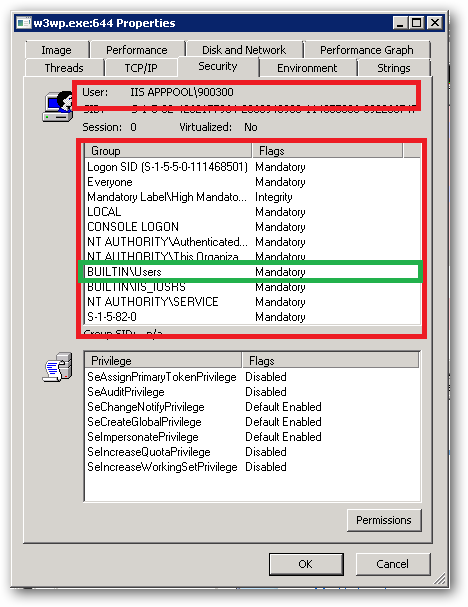
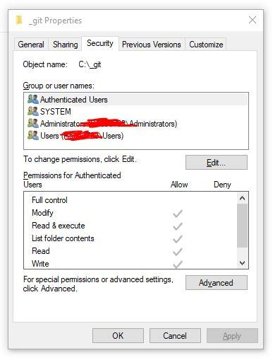
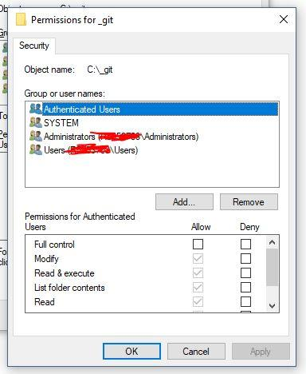
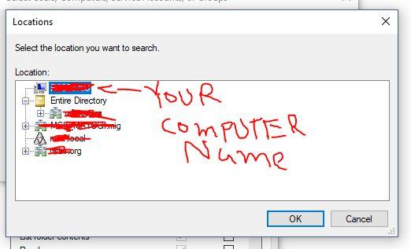
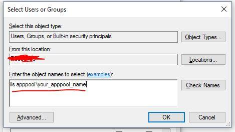

IIS AppPoolIdentity and file system write access permissions
Here's an issue with IIS 7.5 and ASP.NET that I've been researching and getting nowhere with. Any help would be greatly appreciated.
My question is: using ASP.NET in IIS 7.5, how does IIS and/or the operating
system allow the web application to write to a folder like C:\dump when
running under full trust? How is it that I don't have to explicitly add write
access for the application pool user (in this case ApplicationPoolIdentity)?
This much I know:
- In IIS 7.5, the default Identity for an Application Pool is
ApplicationPoolIdentity. -
ApplicationPoolIdentityrepresents a Windows user account called "IIS APPPOOL\AppPoolName", which is created when the Application Pool is created, where AppPoolName is the name of the Application Pool. - The "IIS APPPOOL\AppPoolName" user is by default a member of the
IIS_IUSRSgroup. - If you are running under Full Trust, your web application can write to many areas of the file system (excluding folders like
C:\Users,C:\Windows, etc). For example, your application will have access to write to some folders, like,C:\dump. - By default, the
IIS_IUSRSgroup is not given read or write access toC:\dump(at least not access that is visible through the "Security" tab in Windows Explorer). - If you deny write access to
IIS_IUSRS, you will get a SecurityException when trying to write to the folder (as expected).
So, taking all of that into account, how is write access granted to the "IIS APPPOOL\AppPoolName" user? The w3wp.exe process runs as this user, so what allows this user to write to a folder it doesn't seem to have explicit access to?
Please note that I understand this was probably done for the sake of convenience, since it would be a pain to grant a user access to every folder it needs to write to if you are running under Full Trust. If you want to limit this access, you can always run the application under Medium Trust. I am interested in finding out about the way the operating system and/or IIS allows these writes to take place, even though there appears to be no explicit file system access granted.
Answer
The ApplicationPoolIdentity is assigned membership of the Users group as
well as the IIS_IUSRS group. On first glance this may look somewhat
worrying, however the Users group has somewhat limited NTFS rights.
For example, if you try and create a folder in the C:\Windows folder then
you'll find that you can't. The ApplicationPoolIdentity still needs to be
able to read files from the windows system folders (otherwise how else would
the worker process be able to dynamically load essential DLL's).
With regard to your observations about being able to write to your c:\dump
folder. If you take a look at the permissions in the Advanced Security
Settings, you'll see the following:

See that Special permission being inherited from c:\:

That's the reason your site's ApplicationPoolIdentity can read and write
to that folder. That right is being inherited from the c:\ drive.
In a shared environment where you possibly have several hundred sites, each
with their own application pool and Application Pool Identity, you would store
the site folders in a folder or volume that has had the Users group removed
and the permissions set such that only Administrators and the SYSTEM account
have access (with inheritance).
You would then individually assign the requisite permissions each IIS
AppPool\[name] requires on it's site root folder.
You should also ensure that any folders you create where you store potentially
sensitive files or data have the Users group removed. You should also make
sure that any applications that you install don't store sensitive data in
their c:\program files\[app name] folders and that they use the user profile
folders instead.
So yes, on first glance it looks like the ApplicationPoolIdentity has more
rights than it should, but it actually has no more rights than it's group
membership dictates.
An ApplicationPoolIdentity's group membership can be examined using the
SysInternals Process Explorer tool. Find the worker process that is running
with the Application Pool Identity you're interested in (you will have to add
the User Name column to the list of columns to display:

For example, I have a pool here named 900300 which has an Application Pool
Identity of IIS APPPOOL\900300. Right clicking on properties for the process
and selecting the Security tab we see:

As we can see IIS APPPOOL\900300 is a member of the Users group.
Suggest
-
Right click on folder.
-
Click Properties
-
Click Security Tab. You will see something like this:

- Click "Edit..." button in above screen. You will see something like this:

- Click "Add..." button in above screen. You will see something like this:

- Click "Locations..." button in above screen. You will see something like this. Now, go to the very of top of this tree structure and select your computer name, then click OK.

- Now type "iis apppool\your_apppool_name" and click "Check Names" button. If the apppool exists, you will see your apppool name in the textbox with underline in it. Click OK button.

-
Check/uncheck whatever access you need to grant to the account
-
Click Apply button and then OK.